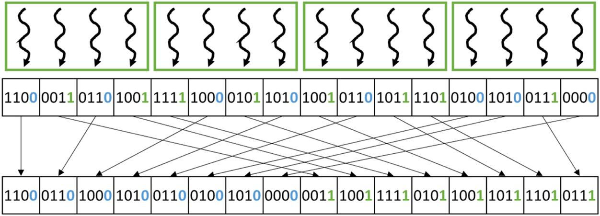
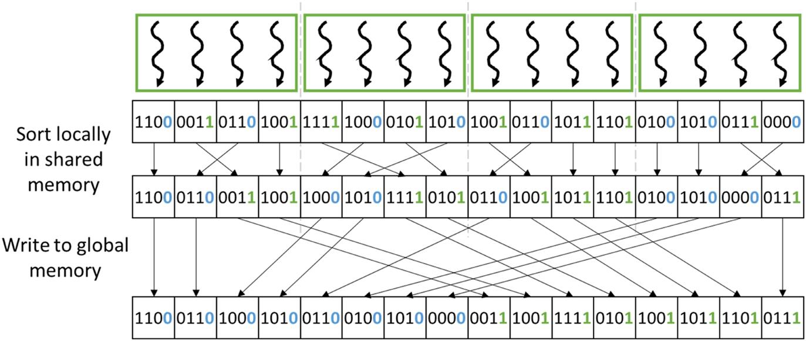
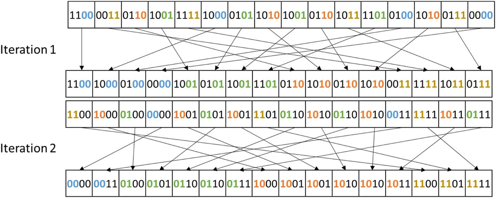
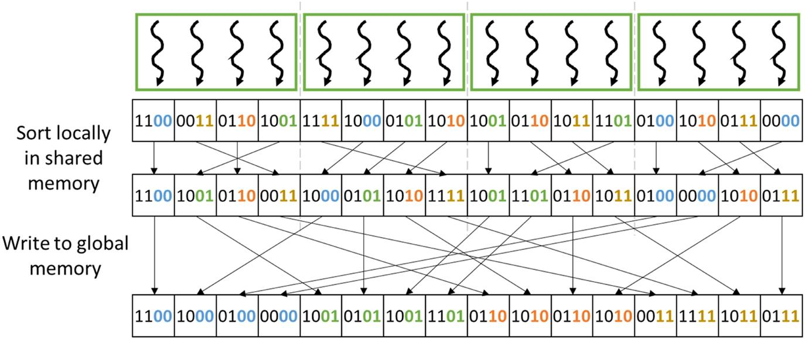
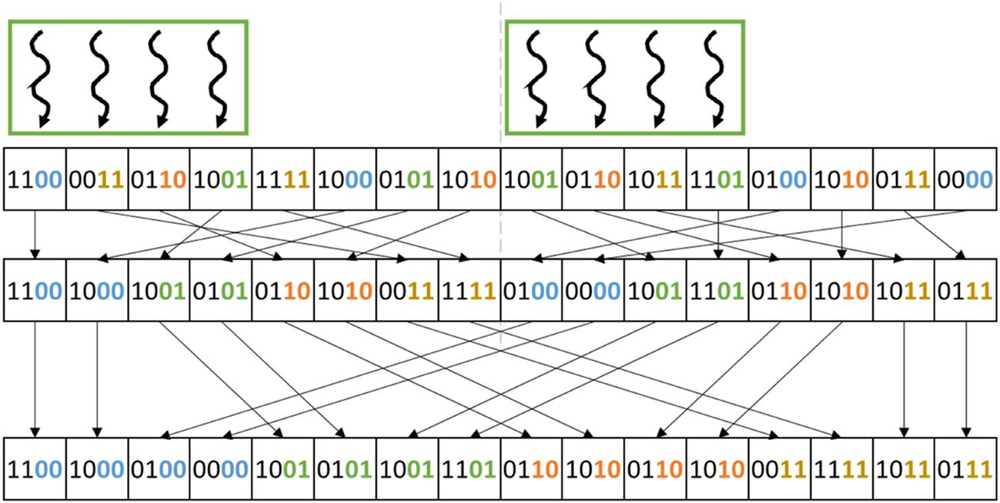

Sorting
With special contributions from Michael Garland
Abstract
This chapter covers two types of sorting methods that rearrange keys (and their associated values) on GPUs into a desired order in parallel. The first type of sorting method is radix sort, which sorts keys by distributing them across buckets. We show that using the shared memory for output tiling and applying thread coarsening improves coalescing and reduces the overhead of the global exclusive scan. Although radix sort has the advantage of having a computational complexity that is lower than O(N*log(N)), it does not work for keys with complex ordering requirements. Therefore we also briefly look at the parallelization of comparison-based sorting that is applicable to general types of keys and comparison operations. A class of comparison-based sorting algorithms that is amenable to parallelization is merge sort. Merge sort can be parallelized by performing independent merge operations of different input segments in parallel as well as parallelizing within each merge operation. We also briefly discuss other popular parallel sorting algorithms.
Keywords
Counting sort; radix sort; bucketing; comparison sort; merge sort; divide and conquer; memory coalescing; shared memory; thread coarsening; transposition sort; bitonic sort; sorting networks; sample sort; top-down sort methods; bottom-up sort methods
Sorting algorithms place the data elements of a list into a certain order. Sorting is foundational to modern data and information services, since the computational complexity of retrieving information from datasets can be significantly reduced if the dataset is in proper order. For example, sorting is often used to canonicalize the data for fast comparison and reconciliation between data lists. Also, the efficiency of many data-processing algorithms can be improved if the data is in certain order. Because of their importance, efficient sorting algorithms have been the subject of many computer science research efforts. Even with these efficient algorithms, sorting large data lists is still time consuming and can benefit from parallel execution. Parallelizing efficient sorting algorithms is challenging and requires elaborate designs. This chapter presents the parallel designs for two important types of efficient sorting algorithms: radix sort and merge sort. Most of the chapter is dedicated to radix sort; merge sort is discussed briefly on the basis of the parallel merge pattern that was covered in Chapter 12, Merge. Other popular parallel sorting algorithms, such as transposition sort and sampling sort, are also briefly discussed.
13.1 Background
Sorting is one of the earliest applications for computers. A sorting algorithm arranges the elements of a list into a certain order. The order to be enforced by a sorting algorithm depends on the nature of these elements. Examples of popular orders are numerical order for numbers and lexicographical order for text strings. More formally, any sorting algorithm must satisfy the following two conditions:
- 1. The output is in either nondecreasing or nonincreasing order. For nondecreasing order, each element is no smaller than the previous element according to the desired order. For nonincreasing order, each element is no larger than the previous element according to the desired order.
- 2. The output is a permutation of the input. That is, the algorithm must retain all of the original input elements while reordering them into the output.
In its simplest form, the elements of a list can be sorted according to the values of each element. For example, the list [5, 2, 7, 1, 3, 2, 8] can be sorted into a nondecreasing order output [1, 2, 2, 3, 5, 7, 8].
A more complex and common use case is that each element consists of a key field and a value field and the list should be sorted on the basis of the key field. For example, assume that each element is a tuple (age, income in thousands of dollars). The list [(30,150), (32,80), (22,45), (29,80)] can be sorted by using the income as the key field into a nonincreasing order [(30,150), (32,80), (29,80), (22,45)].
Sorting algorithms can be classified into stable and unstable algorithms. A stable sort algorithm preserves the original order of appearance when two elements have equal key value. For example, when sorting the list [(30,150), (32,80), (22,45), (29,80)] into a nonincreasing order using income as the key field, a stable sorting algorithm must guarantee that (32, 80) appears before (29,80) because the former appear before the latter in the original input. An unstable sorting algorithm does not offer such a guarantee. Stable algorithms are required if one wishes to use multiple keys to sort a list in a cascaded manner. For example, if each element has a primary key and a secondary key, with stable sorting algorithms, one can first sort the list according to the secondary key and then sort one more time with the primary key. The second sort will preserve the order produced by the first sort.
Sorting algorithms can also be classified into comparison-based and noncomparison-based algorithms. Comparison-based sorting algorithms cannot achieve better than  complexity when sorting a list of
complexity when sorting a list of  elements because they must perform a minimal number of comparisons among the elements. In contrast, some of the noncomparison-based algorithms can achieve better than
elements because they must perform a minimal number of comparisons among the elements. In contrast, some of the noncomparison-based algorithms can achieve better than  complexity, but they may not generalize to arbitrary types of keys. Both comparison-based and noncomparison-based sorting algorithms can be parallelized. In this chapter we present a parallel noncomparison-based sorting algorithm (radix sort) as well as a parallel comparison-based sorting algorithm (merge sort).
complexity, but they may not generalize to arbitrary types of keys. Both comparison-based and noncomparison-based sorting algorithms can be parallelized. In this chapter we present a parallel noncomparison-based sorting algorithm (radix sort) as well as a parallel comparison-based sorting algorithm (merge sort).
Because of the importance of sorting, the computer science research community has produced a great spectrum of sorting algorithms based on a rich variety of data structures and algorithmic strategies. As a result, introductory computer science classes often use sorting algorithms to illustrate a variety of core algorithm concepts, such as big O notation; divide-and-conquer algorithms; data structures such as heaps and binary trees; randomized algorithms; best-, worst-, and average-case analysis; time-space tradeoffs; and upper and lower bounds. In this chapter we continue this tradition and use two sorting algorithms to illustrate several important parallelization and performance optimization techniques (Satish et al., 2009).
13.2 Radix sort
One of the sorting algorithms that is highly amenable to parallelization is radix sort. Radix sort is a noncomparison-based sorting algorithm that works by distributing the keys that are being sorted into buckets on the basis of a radix value (or base in a positional numeral system). If the keys consist of multiple digits, the distribution of the keys is repeated for each digit until all digits are covered. Each iteration is stable, preserving the order of the keys within each bucket from the previous iteration. In processing keys that are represented as binary numbers, choosing a radix value that is a power of 2 is convenient because it makes iterating over the digits and extracting them easy. Each iteration essentially handles a fixed-size slice of the bits from the key. We will start by using a radix of 2 (i.e., a 1-bit radix) and then extend to larger radix values later in the chapter.
Fig. 13.1 shows an example of how a list of 4-bit integers can be sorted with radix sort using a 1-bit radix. Since the keys are 4 bits long and each iteration processes 1 bit, four iterations are required in total. In the first iteration the least significant bit (LSB) is considered. All the keys in the iteration’s input list whose LSB is 0 are placed on the left side of the iteration’s output list, forming a bucket for the 0 bits. Similarly, all the keys in the iteration’s input list whose LSB is 1 are placed on the right side of the iteration’s output list forming a bucket for the 1 bits. Note that within each bucket in the output list, the order of the keys is preserved from that in the input list. In other words, keys that are placed in the same bucket (i.e., that have the same LSB) must appear in the same order in the output list as they did in the input list. We will see why this stability requirement is important when we discuss the next iteration.
In the second iteration in Fig. 13.1, the output list from the first iteration becomes the new input list, and the second LSB of each key is considered. As in the first iteration, the keys are separated into two buckets: a bucket for the keys whose second LSB is 0 and another bucket for the keys whose second LSB is 1. Since the order from the previous iterations is preserved, we observe that the keys in the second iteration’s output list are now sorted by the lower two bits. In other words, all the keys whose lower two bits are 00 come first, followed by those whose lower two bits are 01, followed by those whose lower two bits are 10, followed by those whose lower two bits are 11.
In the third iteration in Fig. 13.1 the same process is repeated while considering the third bit in the keys. Again, since the order from previous iterations is preserved, the keys in the output list of the third iteration are sorted by the lower three bits. Finally, in the fourth and last iteration the same process is repeated while considering the fourth or most significant bit. At the end of this iteration the keys in the final output list are sorted by all four bits.
13.3 Parallel radix sort
Each iteration in radix sort depends on the entire result of the previous iteration. Hence the iterations are performed sequentially with respect to each other. The opportunity for parallelizing radix sort arises within each iteration. For the rest of this chapter we will focus on the parallelization of a single radix sort iteration, with the understanding that the iterations will be executed one after the other. In other words, we will focus on the implementation of a kernel that performs a single radix sort iteration and will assume that the host code calls this kernel once for each iteration.
One straightforward approach to parallelize a radix sort iteration on GPUs is to make each thread responsible for one key in the input list. The thread must identify the position of the key in the output list and then store the key to that position. Fig. 13.2 illustrates this parallelization approach that is applied to the first iteration from Fig. 13.1. Threads in Fig. 13.2 are illustrated as curvy arrows, and thread blocks are illustrated as boxes around the arrows. Each thread is responsible for the key below it in the input list. In this example the 16 keys are processed by a grid with four thread blocks having four threads each. In practice, each thread block may have up to 1024 threads, and the input is much larger, resulting in many more thread blocks. However, we have used a small number of threads per block to simplify the illustration.

With every thread assigned to a key in the input list, the challenge remains for each thread to identify the destination index of its key in the output list. Identifying the destination index of the key depends on whether the key maps to the 0 bucket or the 1 bucket. For keys mapping to the 0 bucket, the destination index can be found as follows:
The destination index of a key that maps to the 0 bucket (i.e., destination of a 0) is equivalent to the number of keys before the key that also map to the 0 bucket (i.e., # zeros before). Since all keys map to either the 0 bucket or the 1 bucket, the number of keys before the key mapping to the 0 bucket is equivalent to the total number of keys before the key (i.e., # keys before) minus the number of keys before the key mapping to the 1 bucket (i.e., # ones before). The total number of keys before the key is just the index of the key in the input list (i.e., the key index), which is trivially available. Hence the only nontrivial part of finding the destination index of a key that maps to the 0 bucket is counting the number of keys before it that map to the 1 bucket. This operation can be done by using an exclusive scan, as we will see shortly.
For keys mapping to the 0 bucket, the destination index can be found as follows:
All keys mapping to the 0 bucket must come before the keys mapping to the 1 bucket in the output array. For this reason, the destination index of a key that maps to the 1 bucket (i.e., destination of a 1) is equivalent to the total number of keys mapping to the 0 bucket (i.e., # zeros in total) plus the number of keys before the key that map to the 1 bucket (i.e., # ones before). Since all keys map to either the 0 bucket or the 1 bucket, the total number of keys mapping to the 0 bucket is equivalent to the total number of keys in the input list (i.e., # keys in total) minus the total number of keys mapping to the 1 bucket (i.e., # ones in total). The total number of keys in the input list is just the input size, which is trivially available. Hence the nontrivial part of finding the destination index of a key that maps to the 1 bucket is counting the number of keys before it that map to the 1 bucket, which is the same information that is needed for the 0 bucket case. Again, this operation can be done by using an exclusive scan, as we will see shortly. The total number of keys mapping to the 1 bucket can be found as a byproduct of the exclusive scan.
Fig. 13.3 shows the operations that each thread performs to find its key’s destination index in the example in Fig. 13.2. The corresponding kernel code to perform these operations is shown in Fig. 13.4. First, each thread identifies the index of the key for which it is responsible (line 03), performs a boundary check (line 04), and loads the key from the input list (line 06). Next, each thread extracts from the key the bit for the current iteration to identify whether it is a 0 or a 1 (line 07).
Here, the iteration number iter tells us the position of the bit in which we are interested. By shifting the key to the right by this amount, we move the bit to the rightmost position. By applying a bitwise-and operation (&) between the shifted key and a 1, we zero out all the bits in the shifted key except the rightmost bit. Hence the value of bit will be the value of the bit in which we are interested. In the example in Fig. 13.3, since the example is for iteration 0, the LSB is extracted, as shown in the row labeled bits.
Once each thread has extracted the bit in which it is interested from the key, it stores the bit to memory (line 08), and the threads collaborate to perform an exclusive scan on the bits (line 10). We discussed how to perform an exclusive scan in Chapter 11, Prefix Sum (Scan). The call to exclusive scan is performed outside the boundary check because threads may need to perform a barrier synchronization in the process, so we need to ensure that all threads are active. To synchronize across all threads in the grid, we assume that we can use sophisticated techniques similar to those used in the single-pass scan discussed in Chapter 11, Prefix Sum (Scan). Alternatively, we could terminate the kernel, call another kernel from the host to perform the scan, and then call a third kernel to perform the operations after the scan. In this case, each iteration would require three grid launches instead of one.
The array resulting from the exclusive scan operation contains, at each position, the sum of the bits before that position. Since these bits are either 0 or 1, the sum of the bits before the position is equivalent to the number of the 1’s before the position (i.e., the number of keys that map to the 1 bucket). In the example in Fig. 13.3 the result of the exclusive scan is shown in the row labeled # ones before. Each thread accesses this array to obtain the number of 1’s before its position (line 12) and the total number of 1’s in the input list (line 13). Each thread can then identify the destination of its key, using the expressions that we derived previously (lines 14–15). Having identified its destination index, the thread can proceed to store the key for which it is responsible at the corresponding location in the output list (line 16). In the example in Fig. 13.3 the destination indices are shown in the row labeled destination. The reader can refer to Fig. 13.2 to verify that the values that are obtained are indeed the right destination indices of each element.
13.4 Optimizing for memory coalescing
The approach we just described is effective at parallelizing a radix sort iteration. However, one major source of inefficiency in this approach is that the writes to the output list exhibit an access pattern that cannot be adequately coalesced. Consider how each thread in Fig. 13.2 writes its key to the output list. In the first thread block, the first thread writes to the 0 bucket, the second thread writes to the 1 bucket, the third thread writes to the 0 bucket, and the fourth thread writes to the 1 bucket. Hence threads with consecutive index values are not necessarily writing to consecutive memory locations, resulting in poor coalescing and requiring multiple memory requests to be issued per warp.
Recall from Chapter 6, Performance Considerations, that there are various approaches to enable better memory coalescing in kernels: (1) rearranging the threads, (2) rearranging the data that the threads access, or (3) performing the uncoalesceable accesses on shared memory and transferring data between shared memory and global memory in a coalesced way. To optimize for coalescing in this chapter, we will use the third approach. Instead of having all threads write their keys to global memory buckets in an uncoalesced manner, we will have each thread block maintain its own local buckets in the shared memory. That is, we will no longer perform a global sort as shown in Fig. 13.4. Rather, the threads in each block will first perform a block-level local sort to separate the keys mapping to the 0 bucket and the keys mapping to the 1 bucket in shared memory. After that, the buckets will be written from shared memory to global memory in a coalesced manner.
Fig. 13.5 shows an example of how memory coalescing can be enhanced for the example in Fig. 13.2. In this example, each thread block first performs a local radix sort on the keys that it owns and stores the output list into the shared memory. The local sort can be done in the same way as the global sort was done previously and requires each thread block to perform only a local exclusive scan instead of requiring a global one. After the local sort, each thread block writes its local buckets to the global buckets in a more coalesced way. For example, in Fig. 13.5, consider how the first thread block writes out its buckets to global memory. The first two threads both write to adjacent locations in global memory when writing the 0 bucket, while the last two threads also write to adjacent locations in global memory when writing the 1 bucket. Hence the majority of writes to global memory will be coalesced.

The main challenge in this optimization is for each thread block to identify the beginning position of each of its local buckets in the corresponding global bucket. The beginning position of a thread block’s local buckets depends on the sizes of the local buckets in the other thread blocks. In particular, the position of a thread block’s local 0 bucket is after all the local 0 buckets of the preceding thread blocks. On the other hand, the position of a thread block’s local 1 bucket is after all the local 0 buckets of all the thread blocks and all the local 1 buckets of the preceding thread blocks. These positions can be obtained by performing an exclusive scan on the thread blocks’ local bucket sizes.
Fig. 13.6 shows an example of how an exclusive scan can be used to find the position of each thread block’s local buckets. After completing the local radix sort, each thread block identifies the number of keys in each of its local buckets. Next, each thread block stores these values in a table as shown in Fig. 13.6. The table is stored in row-major order, meaning that it places the sizes of the local 0 buckets for all thread blocks consecutively, followed by the sizes of the local 1 buckets. After the table has been constructed, an exclusive scan is executed on the linearized table. The resulting table consists of the beginning positions of each thread block’s local buckets, which are the values we are looking for.
Once a thread block has identified the beginning position of its local buckets in global memory, the threads in the block can proceed to store their keys from the local buckets to the global buckets. To do so, each thread needs to keep track of the number of keys in the 0 bucket versus the 1 bucket. During the write phase, threads in each block will be writing a key in either of the buckets depending on its thread index values. For example, for block 2 in Fig. 13.6, thread 0 writes the single key in the 0 bucket, and threads 1–3 write the three keys in the 1 bucket. In comparison, for block 3 in Fig. 13.6, threads 0–2 write the three keys in the 0 bucket, and thread 3 writes the 1 key in the one bucket. Hence each thread needs to test whether it is responsible for writing a key in the local 0 bucket or the 1 bucket. Each block tracks the number of keys in each of its two local buckets so that the threads can determine where their threadIdx values fall and participate in the writing of the 0 bucket keys or 1 bucket keys. We leave the implementation of this optimization as an exercise for the reader.
13.5 Choice of radix value
So far, we have seen how radix sort can be parallelized by using a 1-bit radix as an example. For the 4-bit keys in the example, four iterations (one for each bit) are needed for the keys to be fully sorted. In general, for N-bit keys, N iterations are needed to fully sort the keys. To reduce the number of iterations that are needed, a larger radix value can be used.
Fig. 13.7 shows an example of how radix sort can be performed using a 2-bit radix. Each iteration uses two bits to distribute the keys to buckets. Hence the 4-bit keys can be fully sorted by using only two iterations. In the first iteration the lower two bits are considered. The keys are distributed across four buckets corresponding to the keys where the lower two bits are 00, 01, 10, and 11. In the second iteration the upper two bits are considered. The keys are then distributed across four buckets based on the upper two bits. Similar to the 1-bit example, the order of the keys within each bucket is preserved from the previous iteration. Preserving the order of the keys within each bucket ensures that after the second iteration the keys are fully sorted by all four bits.

Similar to the 1-bit example, each iteration can be parallelized by assigning a thread to each key in the input list to find the key’s destination index and store it in the output list. To optimize for memory coalescing, each thread block can sort its keys locally in the shared memory and then write the local buckets to global memory in a coalesced manner. An example of how to parallelize a radix sort iteration and optimize it for memory coalescing using the shared memory is shown in Fig. 13.8.

The key distinction between the 1-bit example and the 2-bit example is how to separate the keys into four buckets instead of two. For the local sort inside of each thread block, a 2-bit radix sort is performed by applying two consecutive 1-bit radix sort iterations. Each of these 1-bit iterations requires its own exclusive scan operation. However, these operations are local to the thread block, so there is no coordination across thread blocks in between the two 1-bit iterations. In general, for an r-bit radix, r local 1-bit iterations are needed to sort the keys into 2r local buckets.
After the local sort is complete, each thread block must find the position of each of its local buckets in the global output list. Fig. 13.9 shows an example of how the destination of each local bucket can be found for the 2-bit radix example. The procedure is similar to the 1-bit example in Fig. 13.6. Each thread block stores the number of keys in each local bucket to a table, which is then scanned to obtain the global position of each of the local buckets. The main distinction from the 1-bit radix example is that each thread block has four local buckets instead of two, so the exclusive scan operation is performed on a table with four rows instead of two. In general, for an r-bit radix the exclusive scan operation is performed on a table with 2r rows.
We have seen that the advantage of using a larger radix is that it reduces the number of iterations that are needed to fully sort the keys. Fewer iterations means fewer grid launches, global memory accesses, and global exclusive scan operations. However, using a larger radix also has disadvantages. The first disadvantage is that each thread block has more local buckets where each bucket has fewer keys. As a result, each thread block has more distinct global memory bucket sections that it needs to write to and less data that it needs to write to each section. For this reason, the opportunities for memory coalescing decrease as the radix gets larger. The second disadvantage is that the table on which the global exclusive scan is applied gets larger with a larger radix. For this reason, the overhead of the global exclusive scan increases as the radix increases. Therefore the radix cannot be made arbitrarily large. The choice of radix value must strike a balance between the number of iterations on one hand and the memory coalescing behavior as well as the overhead of the global exclusive scan on the other hand. We leave the implementation of radix sort with a multibit radix as an exercise for the reader.
13.6 Thread coarsening to improve coalescing
The price of parallelizing radix sort across many thread blocks is poor coalescing of writes to global memory. Each thread block has its own local buckets that it writes to global memory. Having more thread blocks means having fewer keys per thread block, which means that the local buckets are going to be smaller, exposing fewer opportunities for coalescing when they are written to global memory. If these thread blocks were to be executed in parallel, the price of poor coalescing might be worth paying. However, if these thread blocks were to be serialized by the hardware, the price would be paid unnecessarily.
To address this issue, thread coarsening can be applied whereby each thread is assigned to multiple keys in the input list instead of just one. Fig. 13.10 illustrates how thread coarsening can be applied to a radix sort iteration for the 2-bit radix example. In this case, each thread block is responsible for more keys than was the case in the example in Fig. 13.8. Consequently, the local buckets of each thread block are larger, exposing more opportunities for coalescing. When we compare Fig. 13.8 and Fig. 13.10, it is clear that in Fig. 13.10 it is more likely the case that consecutive threads write to consecutive memory locations.

Another price for parallelizing radix sort across many thread blocks is the overhead of performing the global exclusive scan to identify the destination of each thread block’s local buckets. Recall from Fig. 13.9 that the size of the table on which the exclusive scan is performed is proportional to the number of buckets as well as the number of blocks. By applying thread coarsening, the number of blocks is reduced, thereby reducing the size of the table and the overhead of the exclusive scan operation. We leave the application of thread coarsening to radix sort as an exercise for the reader.
13.7 Parallel merge sort
Radix sort is suitable when keys are to be sorted in lexicographic order. However, if keys are to be sorted on the basis of a complex order defined by a complex comparison operator, then radix sort is not suitable, and a comparison-based sorting algorithm is necessary. Moreover, an implementation of a comparison-based sorting algorithm can be more easily adapted to different types of keys by simply changing the comparison operator. In contrast, adapting an implementation of a noncomparison-based sorting algorithm such as radix sort to different types of keys may involve creating different versions of the implementation. These considerations may make comparison-based sorting more favorable in some cases, despite their higher complexity.
One comparison-based sort that is amenable to parallelization is merge sort. Merge sort works by dividing the input list into segments, sorting each segment (using merge sort or another sorting algorithm), and then performing an ordered merge of the sorted segments.
Fig. 13.11 shows an example of how merge sort can be parallelized. Initially, the input list is divided into many segments, each of which are sorted independently, using some efficient sorting algorithm. After that, every pair of segments is merged into a single segment. This process is repeated until all the keys become part of the same segment.
At each stage, the computation can be parallelized by performing different merge operations in parallel as well as parallelizing within merge operations. In the earlier stages, there are more independent merge operations that can be performed in parallel. In the later stages, there are fewer independent merge operations, but each merge operation merges more keys, exposing more parallelism within the merge operation. For example, in Fig. 13.11 the first merge stage consists of four independent merge operations. Hence our grid of eight thread blocks may assign two thread blocks to process each merge operation in parallel. In the next stage, there are only two merge operations, but each operation merges twice the number of keys. Hence our grid of eight thread blocks may assign four thread blocks to process each merge operation in parallel. We saw how to parallelize a merge operation in Chapter 12, Merge. We leave the implementation of merge sort based on parallel merge as an exercise for the reader.
13.8 Other parallel sort methods
The algorithms outlined above are only two of the many possible ways to sort data in parallel. In this section, we briefly outline some of the other methods that may be of interest to readers.
Among the simplest of parallel sorting methods is the odd-even transposition sort. It begins by comparing, in parallel, every even/odd pair of keys, namely, those with indices k and k + 1 starting at the first even index. The position of the keys is swapped if the key at position k + 1 is less than the key at position k. This step is then repeated for every odd/even pair of keys, namely, those with indices k and k + 1 starting at the first odd index. These alternating phases are repeated until both are completed with no keys needing to be swapped. The odd-even transposition sort is quite similar to sequential bubble sort algorithms, and like bubble sort, it is inefficient on large sequences, since it may perform work of a sequence of elements.
Transposition sort uses a fixed pattern of comparisons and swaps elements when they are out of order. It is easily parallelized because each step compares pairs of keys that do not overlap. There is an entire category of sorting methods that use fixed patterns of comparison to sort sequences, often in parallel. These methods are usually referred to as sorting networks, and the best-known parallel sorting networks are Batcher’s bitonic sort and odd-even merge sort (Batcher, 1968). Batcher’s algorithms operate on sequences of fixed length and are more efficient than odd-even transposition sort, requiring only comparisons for a sequence of N elements. Even though the cost of these algorithms is asymptotically worse than the cost of methods such as merge sort, in practice, they are often the most efficient methods on small sequences because of their simplicity.
Most comparison-based parallel sorts that do not use the fixed set of comparisons that are typical of sorting networks can be divided into two broad categories. The first partitions the unsorted input into tiles, sorts each tile, and then performs most of its work in combining these tiles to form the output. The merge sort that we described in this chapter is an example of such an algorithm; most of the work is performed in the merge tree that combines sorted tiles. The second category focuses most of its work on partitioning the unsorted sequence, such that combining partitions is relatively trivial. Sample sort algorithms (Frazer and McKellar, 1970) are the typical example of this category. Sample sort begins by selecting p−1 keys from the input (e.g., at random), sorts them, and then uses them to partition the input into p buckets such that all keys in bucket k are greater than all keys in any bucket j < k and less than all in any bucket j > k. This step is analogous to a p-way generalization of the two-way partitioning that is performed by quicksort. Having partitioned the data in this way, each bucket can be sorted independently, and the sorted output is formed by merely concatenating the buckets in order. Sample sort algorithms are often the most efficient choice for extremely large sequences in which data must be distributed across multiple physical memories, including across the memories of multiple GPUs in a single node. In practice, oversampling the keys is common, since modest oversampling will result in balanced partitions with high probability (Blelloch et al., 1991).
Just as merge sort and sample sort typify bottom-up and top-down strategies for comparison-based sorting, radix sorting algorithms can be designed to follow a bottom-up or top-down strategy. The radix sort that we described in this chapter is more completely described as an LSB or, more generally, least significant digit (LSD), radix sort. The successive steps of the algorithm start with the LSD of the key and work toward the most significant digit (MSD). A MSD radix sort adopts the opposite strategy. It begins by using the MSD to partition the input into buckets that correspond to the possible values of that digit. This same partitioning is then applied independently in each bucket, using the next MSD. Upon reaching the LSD, the entire sequence will have been sorted. Like sample sort, MSD radix sort is often a better choice for very large sequences. Whereas the LSD radix sort requires global shuffling of data in each step, each step of MSD radix sort operates on progressively more localized regions of the data.
13.9 Summary
In this chapter we have seen how to sort keys (and their associated values) on GPUs in parallel. In most of the chapter we focused on radix sort, which sorts keys by distributing them across buckets. The distribution process is repeated for each digit in the key while preserving the order from the previous digit’s iteration to ensure that the keys are sorted according to all the digits at the end. Each iteration is parallelized by assigning a thread to each key in the input list and having that thread find the destination of the key in the output list, which involves collaborating with other threads to perform an exclusive scan operation.
One of the key challenges in optimizing radix sort is achieving coalesced memory accesses in writing the keys to the output list. An important optimization to enhance coalescing is to have each thread block perform a local sort to local buckets in shared memory and then write each local bucket to global memory in a coalesced manner. Another optimization is to increase the size of the radix to reduce the number of iterations that are needed and thus the number of grids that are launched. However, the radix size should not be increased too much because it would result in poorer coalescing and more overhead from the global exclusive scan operation. Finally, applying thread coarsening is effective at improving memory coalescing as well as reducing the overhead of the global exclusive scan.
Radix sort has the advantage of having computation complexity that is lower than . However, radix sort only works for limited types of keys such as integers. Therefore we also look at the parallelization of comparison-based sorting that is applicable to general types of keys. A class of comparison-based sorting algorithms that is amenable to parallelization is merge sort. Merge sort can be parallelized by performing independent merge operations of different input segments in parallel as well as parallelizing within each merge operation, as we saw in Chapter 12, Merge.
The process of implementing and optimizing parallel sorting algorithms on GPUs is complex, and the average user is more likely to use a parallel sorting library for GPUs, such as Thrust (Bell and Hoberock, 2012), than to implement one’s own sorting kernels from scratch. Nevertheless, parallel sorting remains an interesting case study of the tradeoffs that go into optimizing parallel patterns.
Exercises
- 1. Extend the kernel in Fig. 13.4 by using shared memory to improve memory coalescing.
- 2. Extend the kernel in Fig. 13.4 to work for a multibit radix.
- 3. Extend the kernel in Fig. 13.4 by applying thread coarsening to improve memory coalescing.
- 4. Implement parallel merge sort using the parallel merge implementation from Chapter 12, Merge.